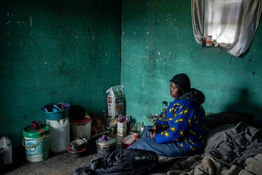

People at higher risk of HIV, such as gay men and people who inject drugs, are facing record levels of criminalisation worldwide, according to UNAids.
For the first time since the joint UN programme on HIV/Aids began reporting on punitive laws a decade ago, the number of countries criminalising same-sex sexual activity and gender expression has increased.
In the past year, Mali has made homosexuality a criminal offence , where the law previously only banned “public indecency”, and has also criminalised transgender people. Trinidad and Tobago ’s court of appeal has overturned a landmark 2018 ruling that decriminalised consensual same-sex relations, reinstating the colonial-era ban. In Uganda, the 2023 Anti-Homosexuality Act has “intensified the proscription of same-sex relations”, and Ghana has moved in a similar direction with the reintroduction of legislation that would increase sentences for gay sex.
The crackdown on gay rights comes as the fight against HIV/Aids has been hit by abrupt US funding cuts , which have combined with “unprecedented” humanitarian challenges and climate crisis shocks to jeopardise hopes of ending the global epidemic this decade, UNAids said.
Several groups of people, known as “key populations”, are more likely to be infected with HIV. They include sex workers, gay men and other men who have sex with men, people who inject drugs, transgender people, and those in prisons and other enclosed settings.
In 2025, only eight of 193 countries did not criminalise any of those groups or behaviours, or criminalise non-disclosure of HIV status, exposure or transmission, according to the report.
The number of people infected by HIV or dying from Aids-related causes in 2024 was the lowest for more than 30 years, according to the UNAids annual report , at 1.3 million and 630,000 respectively.
Mosele Mothibi, an HIV-positive unemployed garment worker from Maseru, Lesotho, has had her medications reduced after cuts to USAID.Photograph: Per-Anders Pettersson/Getty Images
Progress was uneven – ranging from a 56% fall in infections since 2010 in sub-Saharan Africa to a 94% increase in the Middle East and North Africa. But coupled with scientific advances – such as twice-yearly drugs to prevent infection – the world had the “means and momentum” to end Aids as a public health threat by 2030, an internationally agreed goal , it said.
However, that has been “seriously jeopardised” in the early months of this year after sweeping US aid cuts that could undo decades of progress. In January, Donald Trump cut funding that had underpinned much of the global HIV response almost overnight.
The report highlights HIV-prevention services as an area of concern, with many particularly reliant on donor funding. The reported number of people receiving preventive drugs in Nigeria in November 2024 was approximately 43,000. By April 2025, that number had fallen to below 6,000.
Activists say access to prevention will be a particular issue for key populations, who may not be able to access mainstream healthcare due to factors such as stigma or fear of prosecution, but relied on donor-funded community clinics that have now closed.
Key populations were “always left behind”, said Dr Beatriz Grinsztejn, president of the International Aids Society (IAS).
The report is being released before an IAS conference next week in Kigali, Rwanda, where researchers will share data on the impact of cuts.
Modelling by Bristol University calculated that a one-year halt in US funding for preventive drugs in key populations in sub-Saharan Africa would mean roughly 700,000 people no longer used them, and lead to about 10,000 extra cases of HIV over the next five years .
UNAids modelling suggests that without any replacement for funding from US Pepfar (president’s emergency plan for Aids relief), an additional 4m deaths and 6m new infections could be expected globally by 2029.
However, Winnie Byanyima , executive director of UNAids, said 25 of the 60 low- and middle-income countries included in the report had found ways to increase HIV spending from domestic resources to 2026. “This is the future of the HIV response – nationally owned and led, sustainable, inclusive and multisectoral,” she said.